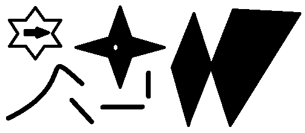
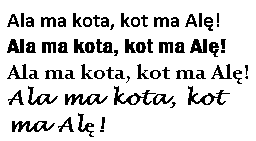
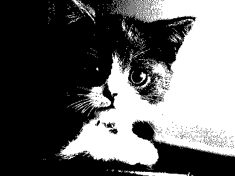
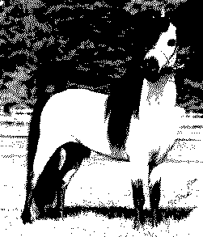
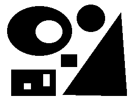
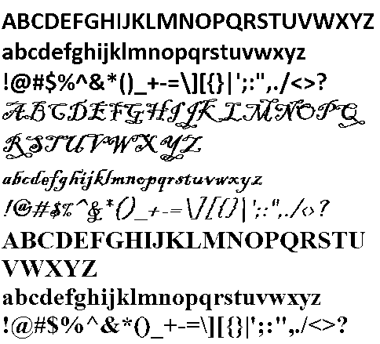
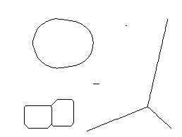
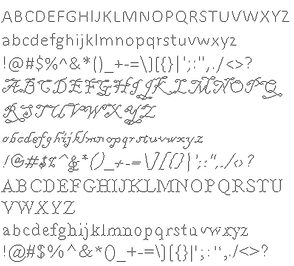
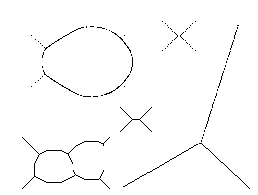
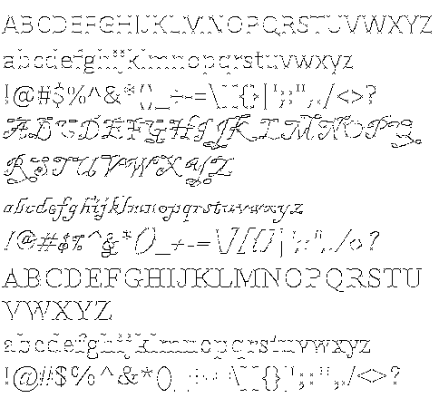

Adam Szczepañski
 English version
English version
Przebieg æwiczenia i kszta³t sprawozdania
-
Teoria - Wyja¶nij co to jest ¶cienianie i co to jest
szkieletyzacja. Do czego praktycznie mo¿na zastosowaæ szkieletyzacjê?
Opisz krótko metody, które zastosujesz w dalszej czêsci sprawozdania.
Porównuj±c algorytmy nale¿y skorzystaæ z obrazów:



 -
KMM - potrzebne maski:
czwórki = {3, 6, 7, 12, 14, 15, 24, 28, 30, 48, 56, 60, 96, 112, 120, 129, 131, 135, 192, 193, 195, 224, 225, 240}
wyciêcia = {3, 5, 7, 12, 13, 14, 15, 20, 21, 22, 23, 28, 29, 30, 31, 48, 52, 53, 54, 55, 56, 60, 61, 62, 63, 65, 67, 69, 71, 77, 79, 80, 81, 83, 84, 85, 86, 87, 88, 89, 91, 92, 93, 94, 95, 97, 99, 101, 103, 109, 111, 112, 113, 115, 116, 117, 118, 119, 120, 121, 123, 124, 125, 126, 127, 131, 133, 135, 141, 143, 149, 151, 157, 159, 181, 183, 189, 191, 192, 193, 195, 197, 199, 205, 207, 208, 209, 211, 212, 213, 214, 215, 216, 217, 219, 220, 221, 222, 223, 224, 225, 227, 229, 231, 237, 239, 240, 241, 243, 244, 245, 246, 247, 248, 249, 251, 252, 253, 254, 255}
sprawdzarka = {{128, 64, 32}, {1, 0, 16}, {2, 4, 8}}
Maskê sprawdzarka zak³ada siê na zasadzie sumy warto¶ci. Na pocz±tku analizy waga piksela ¶rodkowego maski wynosi 0. Je¿eli danej komórce maski odpowiada piksel o warto¶ci 1, 2, 3 lub 4, to do wagi piksela ¶rodkowego dodaje siê wagê analizowanej komórki (nie jest ona wymna¿ana razy warto¶æ piksela). W celu poprawnego dzia³ania algorytmu nale¿y obramowaæ oryginalny obraz ramk± o grubo¶ci 1 px z³o¿on± z bia³ych pikseli.
Przebieg algorytmu:- Wszystkie czarne piksele oznaczamy jako 1, za¶ bia³e jako 0.
- Piksele 1, które posiadaj± s±siadów o oznaczeniu 0 po bokach, u góry lub u do³u, oznaczamy jako 2.
- Pozosta³e piksele 1, które posiadaj± s±siadów o oznaczeniu 0 na rogach, oznaczamy jako 3.
- Dla pikseli oznaczonych jako 2 za pomoc± maski sprawdzarka obliczamy ich wagê. Je¶li waga znajduje siê na li¶cie czwórki oznaczenie piksela zamieniamy z 2 na 4.
- Dla wszystkich pikseli oznaczonych jako 4 wyliczamy wagê za pomoc± maski sprawdzarka. Je¶li waga znajduje siê na li¶cie wyciêcia, zamieniamy piksel na 0, za¶ w przeciwnym razie zamieniamy go na 1.
- Dla wszystkich pikseli oznaczonych jako 2 wyliczamy wagê za pomoc± maski sprawdzarka. Je¶li waga znajduje siê na li¶cie wyciêcia, zamieniamy piksel na 0, za¶ w przeciwnym razie zamieniamy go na 1.
- Dla wszystkich pikseli oznaczonych jako 3 wyliczamy wagê za pomoc± maski sprawdzarka. Je¶li waga znajduje siê na li¶cie wyciêcia, zamieniamy piksel na 0, za¶ w przeciwnym razie zamieniamy go na 1.
- Procedurê powtarzamy dopóki w jej trakcie na obrazie zachodz± zmiany.
-
¦cienianie przez maskê - potrzebna maska:
x 0 x x 1 x 1 1 1
1 oznacza czarny piksel, 0 oznacza bia³y piksel, w miejsce x nale¿y wstawiæ wszystkie mo¿liwe kombinacje czarnych i bia³ych pikseli (razem 16 kombinacji).
W celu poprawnego dzia³ania algorytmu nale¿y obramowaæ oryginalny obraz ramk± o grubo¶ci 1 px z³o¿on± z bia³ych pikseli.
Przebieg algorytmu:- Ka¿dy czarny piksel (warto¶æ 1) oryginalnego obrazka przyrównujemy do maski oraz jej obrotów o 90, 180 i 270 stopni (de facto 64 maski).
- Je¶li otoczenie piksela spe³ni któr±¶ z masek, do kopii wstawiana jest warto¶æ 0 (bia³y), je¶li za¶ otoczenie piksela nie spe³ni ¿adnej z masek, wstawiamy do kopii warto¶æ 1 (czarny)
- Zastêpujemy orygina³ kopi±.
- Czynno¶æ powtarzamy tak d³ugo, jak d³ugo w obrazie zachodz± zmiany.
-
Przyk³ad porównania metod - u góry znajduj± siê obrazy oryginalne, pod nimi ¶cienione KMM, a na dole ¶cienione przez maskê.
   
-
Wnioski - nale¿y porównaæ obrazy otrzymane za pomoc± obu
algorytmów. Który Twoim zdaniem da³ lepsze wyniki? Do jakich zastosowañ
u¿y³by¶ danych algorytmów? Jakie dodatkowe przekszta³cenia zastosowa³by¶
aby poprawiæ jako¶æ uzyskanych wyników szkieletyzacji?